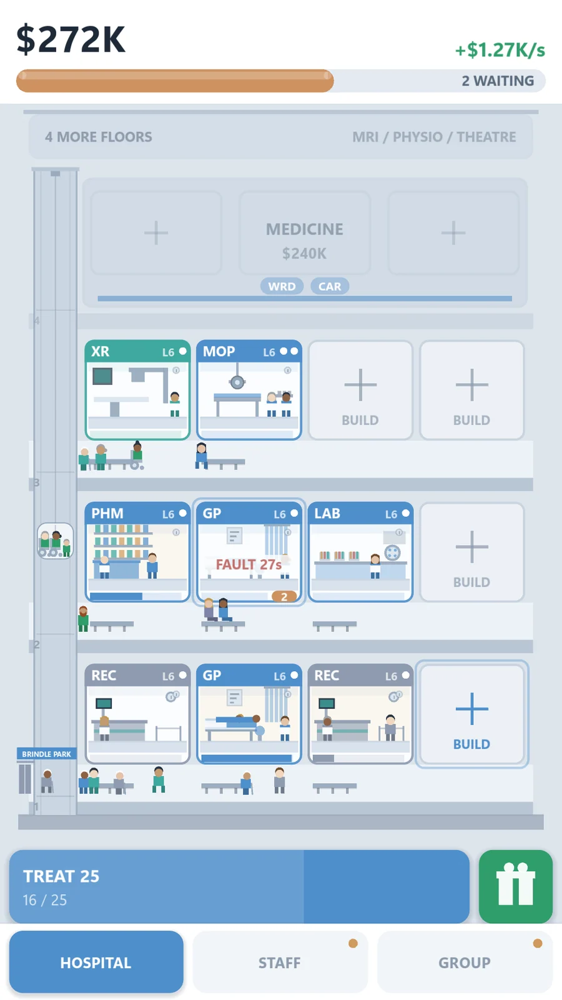
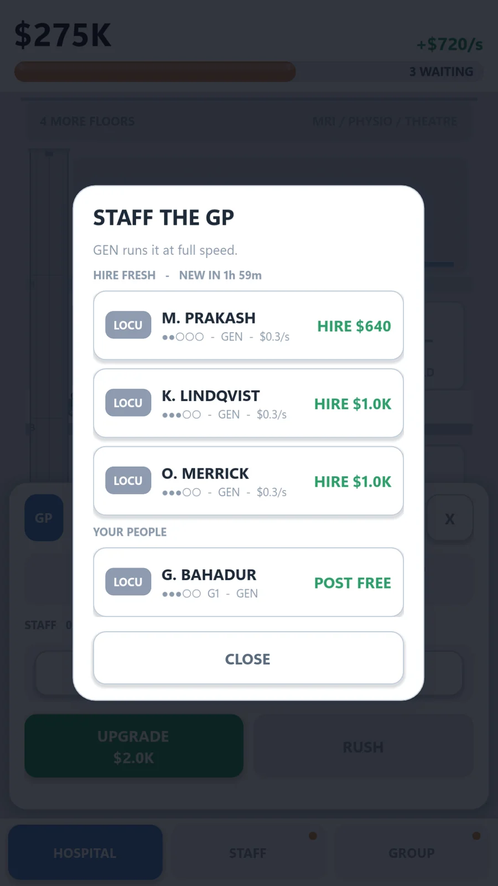
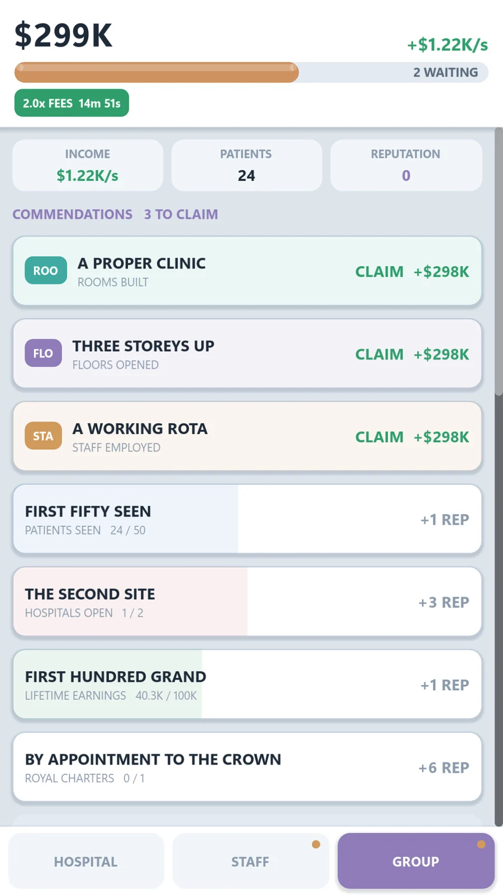
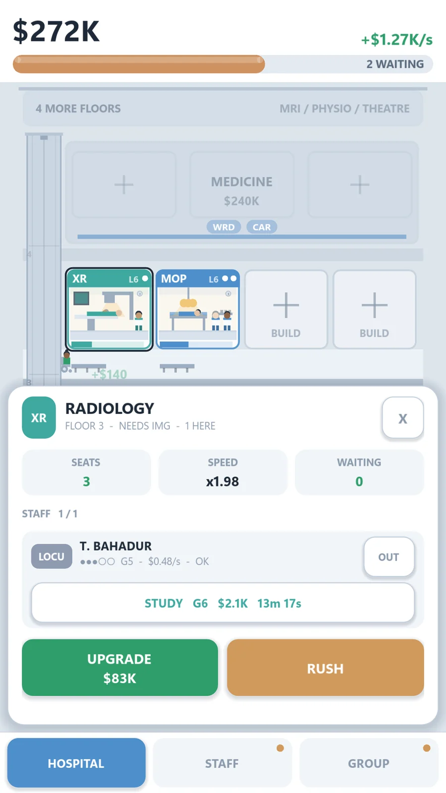
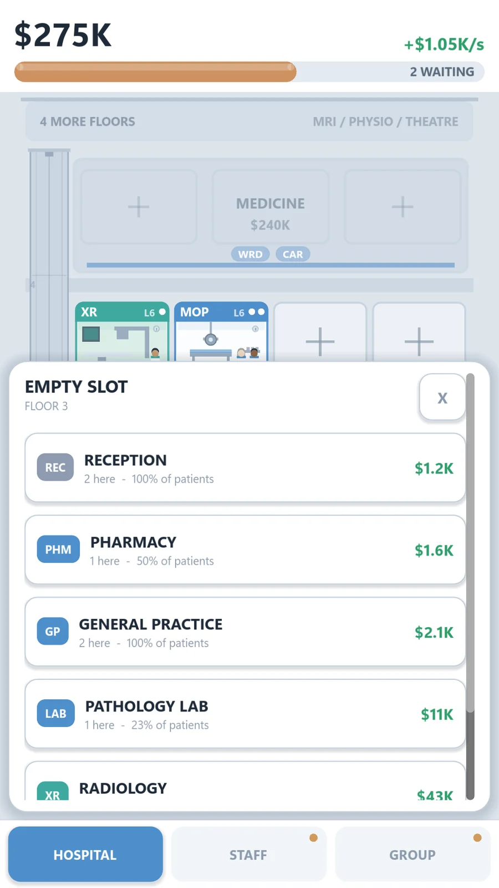

Games / Wardline
Idle tycoon · AndroidWardlineHospital Tycoon
Start with two rooms and a GP who has seen better days. Build the floors, open the wards, and turn a walk-in clinic into a hospital empire.

- Genre
- Idle tycoon · management
- Platform
- Android · iOS soon
- Price
- Free, with optional purchases
- Play
- Portrait · one-handed
- Connection
- Not required
The game
A hospital you can actually read
Most idle games ask you to trust a number going up. Wardline shows you where the number comes from. Patients walk in, wait their turn, get treated, and pay at the door. Every dollar on screen came from someone you treated.
That makes the failure states legible too. Underbuild and the queues back up in front of you. Understaff and the rooms sit dark. Overspend on payroll and your rate goes red. Nothing is hidden behind an abstract score.

Build
Every room earns its floor
Reception, pharmacy, general practice, pathology, radiology, then the machines that need a whole floor to themselves. Each room takes a share of the patients that walk through the door, and each one you add changes where the queue backs up next.
Floors unlock as the money grows. So do the departments that make the money grow faster.

Staff
Staff are people, not upgrades
Locums, consultants, professors. You sign them off a shortlist that refreshes through the day, post them where they are needed, and send them on study leave to grow into the grades above.
They carry a wage while they do it. Payroll is a real line against your rate, so a hospital full of professors is not automatically a hospital that makes money.

Prestige
The Royal Charter
When the money gets big enough, you retire the empire for honours. Every charter is engraved on the Record, and the flagship keeps its name over the door.
Nothing you did disappears when you reset. It becomes history.
Design
Built to respect your time
The commercial decisions were made once, up front, and they are not going to change on you later.
It runs while you are away
Come back to a payout, not a punishment. Nothing decays, nothing needs rescuing, and no queue has been quietly punishing you for going to work.
No ads on a timer
Full-screen ads appear only at natural breaks, and never during your first days. Rewarded video is always optional and always your choice.
Your save is portable
Back the whole thing up with a code and move phones in about ten seconds. No account, no sign-in, no server between you and your hospital.
One hand, no connection
Portrait, thumb-reachable, and playable with the aeroplane mode switch on.
Screens
From the hospital
Select any frame to enlarge.

